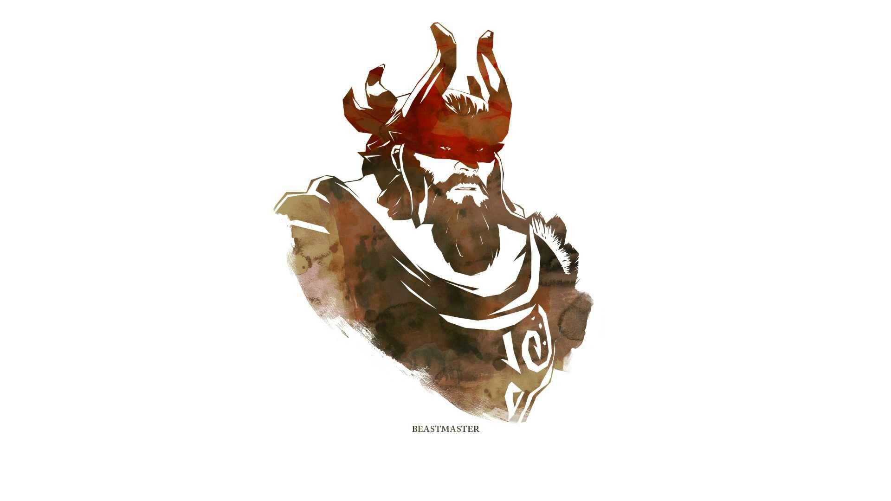

Virtus Pro, dan Wings pastikan diri lolos ke Semi Final ESL One Genting Fnatic
Perpindahan roster, InyourDreaM jajal ESL One Genting Malaysia 2016 bersama Fnatic
Pertama dalam sejarah Dota2! OG berhasil memenangkan 3 Major
ESCape Gaming, apakah akan bernasib saman seperti Fnatic 2014?
Source Gosugamers